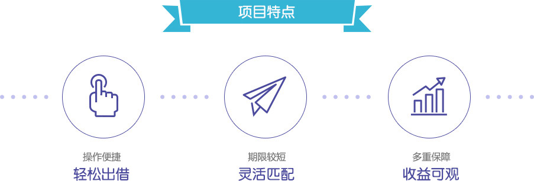

什么是埠贸通？
埠贸通系列是由金融工场（www.9888.cn）推出的一款供应链金融项目。金融工场联合国内知名电商平台重点布局海外商品资源、跨境供应链、保税区仓储等资源，实现物流、资金流、信息流的“三位一体”，为供应链... 展开全部
埠贸通的优势
- 还款方式为到期一次性还本付息
- 预期年化利率高达5% -10%
- 借款期限为1 -3个月
- 起投金额仅100元

-
金融工场
金融工场是由香港上市金融企业——中國信貸科技控股有限公司（Credit China，股票代码：08207.HK）战略控股，由北京凤凰信用管理有限公司（简称：凤凰信用）倾力打造的，专注于网络借贷信息撮合的互联网金融平台。
金融工场致力于通过专业高效的投融资咨询服务，解决企业融资门槛高、融资渠道少、融资速度慢等难题；为资金闲置、有理财需求的投资者提供精选的优质信贷资产；为小贷公司、资产管理公司及其他贷款机构等提供P2P解决方案及线上交易。平台基于不同类型金融产品特点、流动性与收益预期，打造多样化在线投资产品以及特色化的资金出借咨询服务。